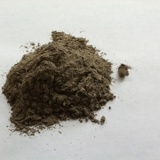

During 2013, NETL research led to 15 patents from the U.S. Patent and Trademark Office.
Just as the nation’s farmers sow, nurture, and ultimately harvest the results of their labor, scientists and engineers at the National Energy Technology Laboratory (NETL) can take pride when their own processes or products are ripe for patents recognizing their efforts. During 2013, 15 tools, techniques, and technologies developed by NETL researchers were recognized for their exclusivity and uniqueness by receiving patents from the U.S. Patent and Trademark Office.
Ranging from advanced sensors to an improved throttle valve to sorbents that capture carbon dioxide (CO2), the newly patented technologies support NETL’s mission to address challenges associated with the continued use of our nation’s fossil energy resources. Their commercialization would ultimately benefit taxpayers by increasing the efficiency and cutting the cost of energy production, lowering emissions, and enhancing America’s energy independence.
NETL’s strategic outreach group manages the laboratory’s patent process by forming licensing and other agreements with industry organizations. Such agreements are designed to facilitate the transfer of the laboratory’s intellectual property into the marketplace.
The technologies patented by NETL in 2013 are now available to the private sector for commercialization in pursuit of the nation’s energy goals. Descriptions of the new patents follow:
Cu-Pd-M Hydrogen Separation Membranes (U.S. patent 8,608,829) - The separation of hydrogen from gas mixtures is a crucial process in existing and envisioned uses of hydrogen as a chemical feedstock and fuel. NETL researchers enhanced the separation process by providing a hydrogen separation membrane composed of an alloy of copper (Cu), palladium (Pd), and either magnesium, yttrium, aluminum, titanium, lanthanum, or combinations thereof (M).
Fabrication of Fiber Supported Ionic Liquids and Methods of Use (U.S. patent 8,383,026) - The use of polymers in separation processes is well known in a variety of industries, from water treatment to industrial gas separations. This patent describes a dry-wet spinning process for producing a fabricated fiber composed of a porous polymer network and an immobilized liquid within the pores of the network.
Active Combustion Flow Modulation Valve (U.S. patent 8,540,209) - Throttle valves are used throughout industry to control the flow of fluids, but most of these applications require relatively low speeds. NETL’s new modulation valve is designed to modulate fluid flow at high speeds in response to an externally supplied control signal.
Method of Particle Trajectory Recognition in Particle Flows of High Particle Concentration Using a Candidate Trajectory Tree Process with Variable Search Areas (U.S. patent 8,391,552) - Particle trajectory recognition is important to measuring gas/fluid flow fields. However, existing methods to automatically recognize trajectories of particles in flow fields face challenges when particle concentration is high. NETL’s patented “tree process” addresses that challenge by using a priori knowledge of particle flow behavior while limiting the size, location, and shape of search areas in successive camera frames based on applying limits to particle velocity and acceleration.
Regenerable Sorbent Technique for Capturing CO2 Using Immobilized Amine Sorbents (U.S. patent 8,500,854) - Integral to national efforts to mitigate climate change through carbon capture and storage, this technology provides an absorption method that uses an amine-based solid sorbent to remove CO2 from a gas stream. The technique mitigates the impact of water loading on regeneration by using a conditioner following the steam-regeneration process.
Regenerable Solid Imine Sorbents (U.S. patent 8,530,375) - This patent describes two new classes of amine-based sorbents — polymer-immobilized tertiary amines and polymer-bound tertiary amines — that can serve as sorbents for the removal of CO2 and other acid anhydrides from any effluent stream.
 sorbent.jpg@itok=ztEDc3Gw) Process for CO2 Capture Using a Regenerable Magnesium Hydroxide Sorbent (U.S. patent 8,470,276) - This novel process uses a magnesium hydroxide sorbent to separate CO2 from a gas stream. When the sorbent comes into contact with the gas, CO2 is separated and magnesium carbonate and water are produced. The sorbent is then regenerated for reuse by treating the magnesium carbonate with heat and water to reproduce the needed magnesium hydroxide. Using the water produced during CO2 removal minimizes the energy required for this step.
Process for CO2 Capture Using a Regenerable Magnesium Hydroxide Sorbent (U.S. patent 8,470,276) - This novel process uses a magnesium hydroxide sorbent to separate CO2 from a gas stream. When the sorbent comes into contact with the gas, CO2 is separated and magnesium carbonate and water are produced. The sorbent is then regenerated for reuse by treating the magnesium carbonate with heat and water to reproduce the needed magnesium hydroxide. Using the water produced during CO2 removal minimizes the energy required for this step.
Minimization of Steam Requirements and Enhancement of Water-Gas Shift Reaction with Warm Gas Temperature CO2 Removal (U.S. patent 8,617,499) - This process uses a hydroxide sorbent to treat a gas stream composed of carbon monoxide and CO2 before it enters a water-gas-shift reactor. The sorbent decreases CO2 concentrations and increases water vapor concentrations, moving the water-gas shift reaction toward CO2 and hydrogen. The sorbent can also be used to absorb CO2 exiting the water-gas-shift reactor. As such, the process facilitates the production of hydrogen from syngas while also providing a dense, CO2-rich gas stream for sequestration or other purposes.
Rapid Gas Hydrate Formation Process (U.S. patent 8,354,565) - DOE's gas hydrate program is driven by the recognition that worldwide deposits of methane hydrate represent a significant storehouse of methane resources and far-reaching implications for the environment and our Nation’s energy supplies. NETL has patented a novel method and apparatus for forming gas hydrates from a two-phase mixture of water and a hydrate-forming gas. As a result, the process continuously forms gas hydrates and does so with a greatly reduced induction time.
Method of Preparing and Utilizing a Catalyst System for an Oxidation Process on a Gaseous Hydrocarbon Stream (U.S. patent 8,486,301) - One of the most difficult challenges in the design and preparation of catalysts for lean combustion or the reforming of hydrocarbons is catalyst deactivation due to an accumulation of carbon. This patented process addresses the problem using a system that combines a catalytically active material phase with a carbon-mitigation material phase. The system employs an optimum coverage ratio for a given set of oxidation conditions based on a specified hydrocarbon conversion and a carbon deposition limit.
Transpiration Purging Access Probe for Particulate Laden or Hazardous Environments (U.S. patent 8,596,798) - Visually observing particulate-laden flows or other hazardous environments within industrial processes can provide an effective means to control those processes. However, optical surfaces must remain free from deposits of particles or other materials. NETL researchers have patented an optical probe that stays clean, even as it peers into vessels containing particulates or other hazardous aerosols. The probe uses a transpiration fluid in conjunction with an accelerating flow field in front of the optical surface to keep it particle free.
Method of Producing an Oxide Dispersion Strengthened Coating and Micro-channels (U.S. patent 8,609,187) - Originally developed to produce superalloys for the aerospace industry, mechanical alloying can be used to synthesize a variety of alloys starting from blended powders. The three-step process involves grinding alloy materials in a ball mill, compressing and sintering the powder, and heat-treating the resulting material to remove internal stresses. NETL has patented a method to fabricate small-grain composite particles for production of oxide dispersion strengthened alloys with significantly reduced milling times. Its implementation would greatly reduce costs while enhancing production of future ultra-high-temperature turbine materials with enhanced oxidation resistance.
Fly Ash Carbon Passivation (U.S. patent 8,440,015) - Although fly ash is often used as a replacement for Portland cement in concrete products, a problem arises when inefficient combustion or the use of low-NOx burners in coal-fired boilers increases the amount of unburned carbon in the fly ash. NETL’s newly patented process addresses this issue through a thermal method to deactivate or “passivate” the carbon and/or other components in fly ash. This improves the workability of the mixture and the durability of the resulting concrete during freeze-thaw cycles.
Radial Flow Pulse Jet Mixer (U.S. patent 8,469,583) - Mixing processes are widely employed to make heterogeneous physical systems more homogenous. The handling of nuclear waste provides one example. The Energy Department has adopted an existing technology, called pulse jet mixers, at its Hanford Site to mix particulate solid nuclear waste in a liquid carrier fluid within a containment vessel. However, particulate material in the fluid comes in many different sizes, and the largest and heaviest particles tend to settle very quickly. This complicates the mixing process. NETL’s radial flow pulse jet mixer overcomes this problem by accelerating flows to lift and separate particles in a sludge basin. Use of the patented technology provides a method to lift and mix solid nuclear waste in a carrier fluid more uniformly, enabling safer transportation to waste sites. The new technology also significantly reduces erosion effects on the containment vessel walls.
Nanocomposite Thin Films for High Temperature Optical Gas Sensing of Hydrogen (U.S. patent 8,411,275) - Since hydrogen can be used in combustion turbines, solid oxide fuel cells, or as a fuel or chemical feedstock, researchers have sought ways to detect it in gas streams, particularly at higher temperatures. This NETL patent describes a method for sensing hydrogen in a gas stream at temperatures greater than 500 degrees Celsius by using the shift in a plasmon resonance peak position generated by a hydrogen-sensing thin-film material.